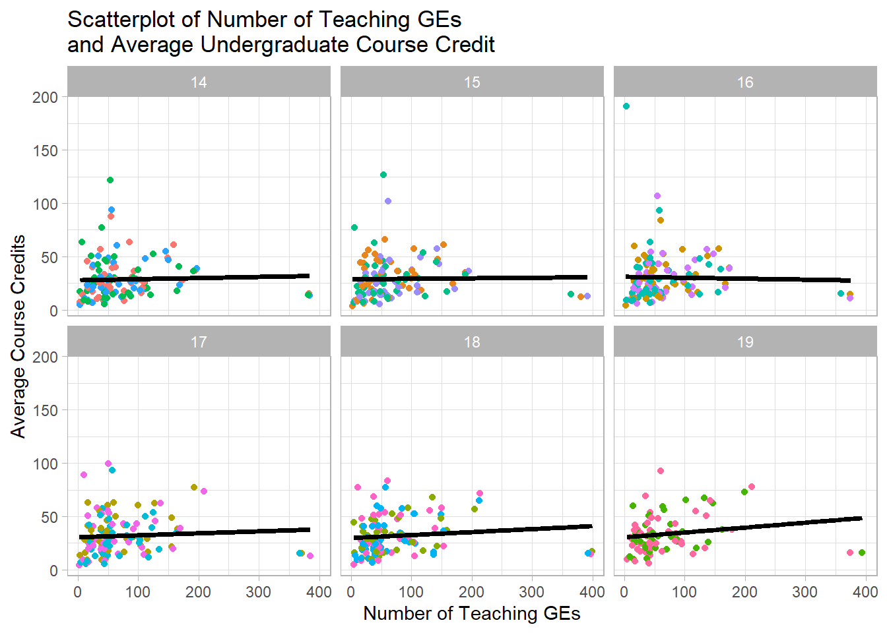

University of Oregon Graduate School Dashboard
University of Oregon
Code can be found here and the actual dashboard can be found here. This document is to show the plots in a quarto document as part of a repo that has all of my projects/visualizations with a product to show.
Column
Number of Teaching GEs Across UO Departments
Undergraduate Course Credits Across Departments
Teaching GE Allocation Across Departments
Findings
Column
FTE & Credits
fte_credit <- uo |>
mutate(
term = full_term
) |>
separate(
col = term,
into = c(
"remove",
"year",
"actual_term"
),
sep = "0"
) |>
mutate(
full_term = case_when(
full_term == "201401" ~ "F14",
full_term == "201402" ~ "W14",
full_term == "201403" ~ "S14",
full_term == "201501" ~ "F15",
full_term == "201502" ~ "W15",
full_term == "201503" ~ "S15",
full_term == "201601" ~ "F16",
full_term == "201602" ~ "W16",
full_term == "201603" ~ "S16",
full_term == "201701" ~ "F17",
full_term == "201702" ~ "W17",
full_term == "201703" ~ "S17",
full_term == "201801" ~ "F18",
full_term == "201802" ~ "W18",
full_term == "201803" ~ "S18",
full_term == "201901" ~ "F19",
full_term == "201902" ~ "W19",
full_term == "201903" ~ "S19"
),
year = str_remove(year, "20"),
college = case_when(
college == 'School of Music & Dance' ~ 'SOMD',
college == 'School of Law' ~ 'LAW',
college == 'School of Journalism & Communication' ~ 'SOJC',
college == 'Lundquist College of Business' ~ 'LCOB',
college == 'College of Education' ~ 'COE',
college == 'College of Design' ~ 'COD',
college == 'College of Arts & Sciences' ~ 'CAS'
)
)
Column
Growth Models
| mean credit | mean credit | mean credit | |||||||
|---|---|---|---|---|---|---|---|---|---|
| Predictors | Estimates | CI | p | Estimates | CI | p | Estimates | CI | p |
| (Intercept) | -1071.26 | -1925.11 – -217.42 | 0.014 | -450.56 | -1266.28 – 365.17 | 0.279 | -925.22 | -1785.96 – -64.48 | 0.035 |
| full term | 0.01 | 0.00 – 0.01 | 0.011 | 0.00 | -0.00 – 0.01 | 0.215 | 0.00 | 0.00 – 0.01 | 0.030 |
| teach ge n | -0.24 | -0.29 – -0.18 | <0.001 | ||||||
| teach ge fte | 17.72 | 2.62 – 32.83 | 0.022 | ||||||
| Random Effects | |||||||||
| σ2 | 84.42 | 74.49 | 83.99 | ||||||
| τ00 | 232.76 college:course_dept | 462.03 college:course_dept | 227.10 college:course_dept | ||||||
| 254.42 college | 566.64 college | 253.00 college | |||||||
| ICC | 0.85 | 0.93 | 0.85 | ||||||
| N | 7 college | 7 college | 7 college | ||||||
| 44 course_dept | 44 course_dept | 44 course_dept | |||||||
| Observations | 698 | 698 | 698 | ||||||
| Marginal R2 / Conditional R2 | 0.001 / 0.853 | 0.183 / 0.945 | 0.004 / 0.852 | ||||||